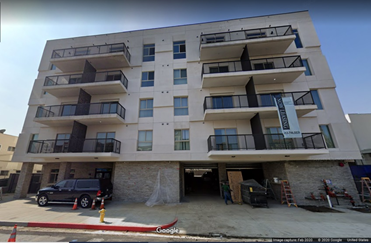
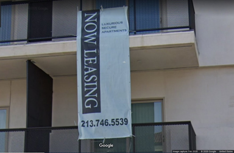
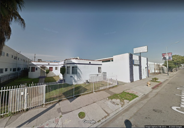

Let’s return to Haroni and the foreclosure crisis, where this section began. As the foreclosure crisis slowed, Haroni began capitalizing on the gentrifying forces arriving to South Central by developing market-rate housing promoted as luxury rentals. While corporate Wall Street landlords targeted primarily single-family homes during this time, entities like Haroni preyed on the acquisition of three-to-six unit properties – what are typically understood to be owned by ‘mom-and-pop’ landlords – exacerbating the transformative decline of such a class. Haroni’s first foreclosed acquisition in February 2011 was a triplex near Jefferson Park whose previous landlord – an individual person – had owned the property and been part of the neighborhood since 1994. In the two year period from 2011-2012, a total of 37 foreclosed properties amounting to over 155 units were acquired.
What emerges in the scene of Haroni investment is a neoliberal approach to housing access along with colonialist one: developers use market subsidy housing policies and nonprofit organizations to fund and launder their private land grab. For instance, Haroni’s first developments, completed in 2016 and 2018, are a three story 37-unit apartment complex on Figueroa and 83rd Street and 50-plus apartment complex near the Crenshaw Corridor on Hyde Park Boulevard and Brynhurst Avenue. Both developments include the bare minimum required by California’s density bonus law. And in what amounts to a strategy of attrition, the partnerships between developers, nonprofits, and politicians upholding gentrification-friendly policies enact what Keeanga-Yamahtta Taylor calls “predatory inclusion.”
Some of Haroni’s units are leased in collaboration with the nonprofit Brilliant Corners, which enters contracts with landlords to house people typically rejected by landlords – including community members who have survived incarceration and policing. These contracts, leased at top market dollar, are underwritten by state subsidy programs that can include MediCal funding and often extend for a five or ten year span after a new building is constructed, helping cover the development cost.
Including low income households in new developments allows investors to appear as if they are providing housing access while weaponizing the idea of security to ensure a police presence that is actively hostile to poor BIPOC communities. And even the roots of the problem these programs are supposed to address are of course the state’s political choices around policing and incarceration. While these programs are often understood as temporary or provisional responses to the dire need to house people otherwise shunned by landlords, Brilliant Corners also happens to have reported over $225 million in assets in its last publicly available tax filings, a massive increase from $128 million the previous year. And because subsidies often expire, both low-income households and municipal agencies are essentially held hostage in a potentially exploitative process that allows developers to temporarily ease into an area with the goal of fully transforming them. In these examples, the stop-gap policies meant to enact fair housing operate as updated forms of redlining that rely on police force to alternately contain, displace, and/or eliminate Black and Brown communities depending on the gentrification potential for the neighborhood.



A closer look at some of Haroni’s properties in the area reveals this “predatory inclusion” at work. The materializing Metro Crenshaw Line has set in motion for speculators to use the Ellis Act – a California state law enacted in 1985 that restricts the power of local governments to prevent landlords from evicting residential tenants – to permanently remove them from the city’s housing stock by means of demolition. On Crenshaw Blvd, between 60th and 63rdwhere the Metro line will directly run, Haroni Investments acquired a fourplex (Photo 1) in June 2016 to then file for its razing one year later. What has emerged is a 75-unit project that includes a bare minimum of low income units to obscure the violent banishment in its foundation (Photo 2).
A ‘now leasing’ banner hangs at this property proclaiming to be “luxurious secure apartments” (Photo 3). While the words ‘luxury’ or ‘luxurious’ are common phrases utilized by market-rate housing developers to advertise their units, more significant is the decision to include the word ‘secure’—which is far less typical. Haroni Investments’ business behavior together with the direct line of communication with the City Attorney’s office to request LAPD intervention suggests that they are in the business of selling a “new” South Central that comes with “security,” enforced through police banishment of undesirable Black and Brown bodies. Whereas the median rent in the area is $1,072, the asking price for a one-bedroom unit at the property is $1,900. As always, this land is only “secure” for some.